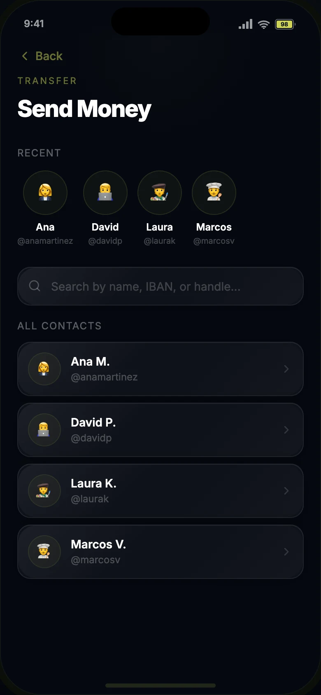
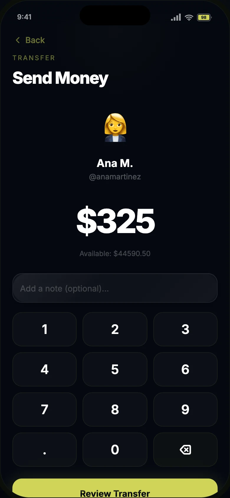
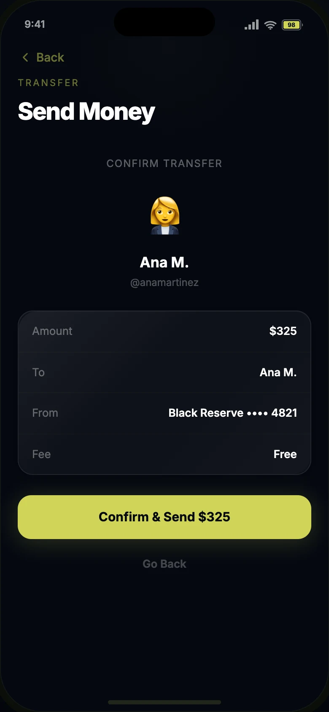
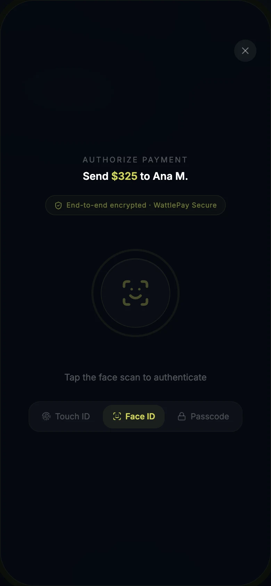
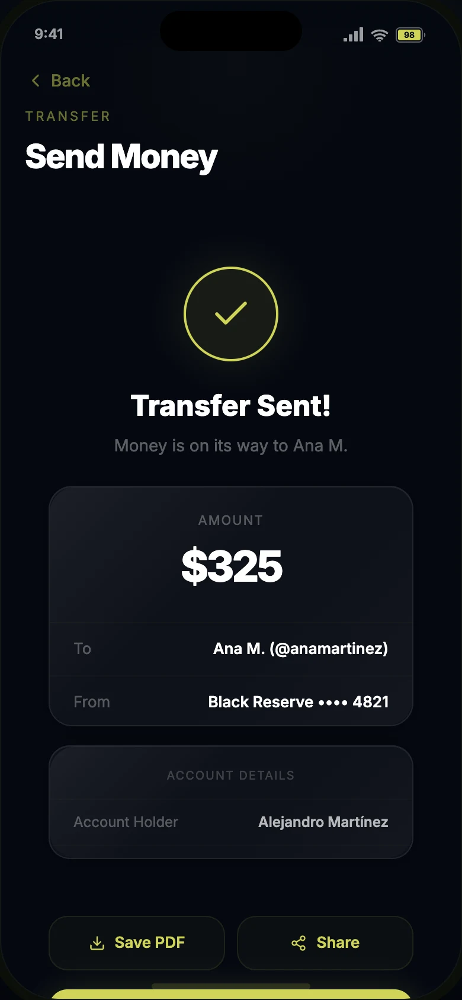
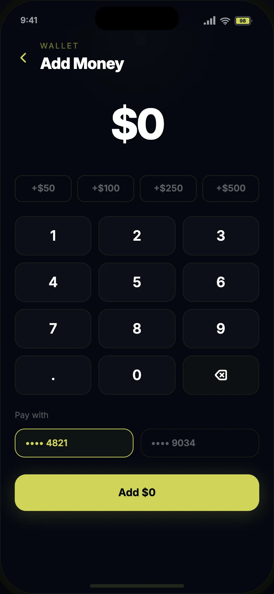
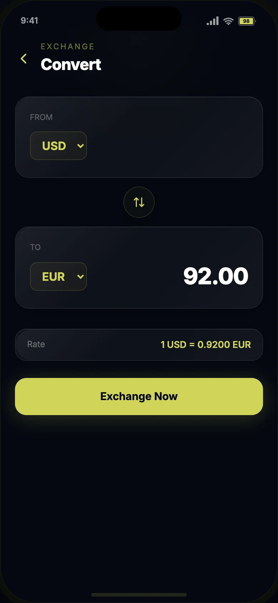
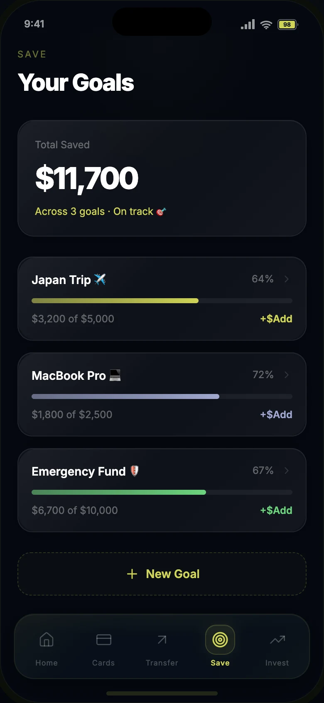
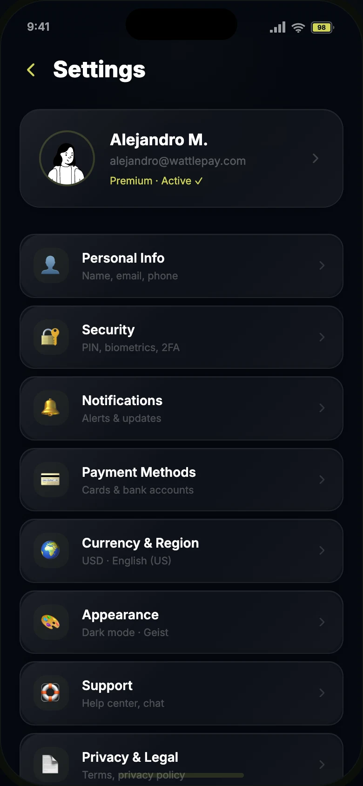

Design a premium mobile banking concept using a dark UI, liquid glass visual language and complete fintech interactions across the core wallet journey.
Case study / Mobile fintech
Designing the behavior behind a polished fintech interface.
WattlePay is a mobile banking concept built to test more than a visual direction. Complete money flows, shared wallet state and a working React prototype make the interface behave as one product.
Product Design
Mobile UX
Fintech
AI-assisted Prototyping
React Prototype


Product Designer across UI direction, UX flows, visual system, interaction states and prototype behavior.
8 screens, 7 complete flows, shared wallet state, real-time balance updates and reusable React components.
Story
The screen set was not finished until the flows behaved as one product.
The goal was to move beyond a polished screen set and design the behavior behind the interface. Sending money, adding savings, converting currency and reviewing activity all needed to feel connected through shared state.
I treated the visual system as part of the product logic: glass layers communicate hierarchy, accent colors signal action, and financial data stays readable inside a dense dark-mode interface.
01 / Visual System
Dark-mode fintech with a controlled glass hierarchy.
The interface uses a narrow palette built around a dark base, a sharp Wattle accent and selective teal moments for portfolio data. Glass surfaces are not decorative: each layer has a hierarchy role.
- Defined accent, base, chart and supporting color roles.
- Used glass layers for primary containers, lists and navigation.
- Kept financial data high-contrast and easy to scan.
Wattle
#CFD457Primary accent · CTA · highlightsBunker
#040810Background · depth · baseTeal
#5EEAD4Portfolio chart accent only
SuccessErrorSecondarySurface
Glass accent$44,590.50
rgba(207,212,87,.04) · blur 40pxPrimary containers, balance cards, key metricsGlass darkZara – Madrid −$89.99
rgba(255,255,255,.04) · blur 24pxLists, transactions, secondary contentGlass nav
rgba(207,212,87,.03) · blur 60pxFloating tab bar, pill shape, inner shadow edges$44,590.50Balance · Inter 800 · tabular numbers
Black ReserveCard label · 700 · uppercase tracking
Meta · 400 · 50% opacity
1018222450Radius scale · chips → cards → surfaces → nav → device
02 / UX Flows
A flow only works when the next state makes sense.
The prototype covers home, cards, transfer, add money, convert, savings, invest and settings. The transfer flow includes contact selection, amount entry, optional note, review, confirmation and receipt.
- Designed 7 connected flows with no dead-end screens.
- Used real-time state so balances, goals and activity update together.
- Included receipts, bank details, transaction IDs and save/share actions.
Transfer flow5 steps · no dead ends
- 01Choose a contact

Recent people first, search by name, IBAN or handle.
- 02Enter the amount

Available balance stays visible while typing.
- 03Review

Amount, recipient, source card and fee before committing.
- 04Authorize

Face ID, Touch ID or passcode, chosen by the user.
- 05Receipt

Reference and transaction IDs, save as PDF or share.
Connected flowsSame wallet state across every screen
- Add money

- Convert

- Save goals

- Invest
- Cards
- Settings

03 / UI Details
Visual polish had to support trust and readability.
The case study includes wallet-style card stacks, floating glass navigation, interactive toggles and SVG chart components. Each detail supports usability, hierarchy or product confidence.
- Card stack with active-card elevation and visual feedback.
- Floating tab bar with blur, inset shadow and active states.
- Toggle, chart and goal components built as reusable patterns.
Layered depth
Translucent panels, blur and edge highlights create hierarchy without overpowering financial content.
Real behavior
Balances, transactions and savings goals update through shared state rather than static mock screens.
Readable finance UI
Large amounts, tabular numbers, labels and metadata are treated as core UI decisions.
Useful feedback
Animation supports card states, transfers, navigation and confirmation moments without becoming decoration.
04 / Prototype
Use code to test the product logic.
The prototype was built with React, Tailwind CSS and SVG components. WalletProvider manages balances, transactions and savings goals, so product behavior stays consistent across screens.
AI-assisted prototyping helped accelerate implementation, but the product behavior, UX decisions, state model and interaction rules were intentionally defined and reviewed as part of the design process.
The prototype was used as a product-design tool: a way to test whether connected flows, shared state and interaction rules behaved coherently before treating the interface as finished.
- React Context for shared wallet state.
- SVG-first charts, progress rings and interface details.
- Clipboard actions, generated transaction IDs and timestamped activity.
Live prototype
Don’t take my word for it. Try it.
This is the working React prototype, running right here. Balances, cards, goals and activity share one state, so every action updates the rest of the app.
- Transfer money to a contact, then check the new balance and activity on Home.
- Cards: tap the stack to move between cards.
- Save: add to a goal and watch its progress ring update.
- Convert between currencies from Home.
WalletProvider manages balance, transactions and savings goals. Every screen reads the same state through a useWallet() hook.
Utility-first styling with custom theme tokens; inline styles for glass effects and dynamic values.
Sparkline chart, progress rings, status bar icons and card stack indicators, all hand-built in SVG.
One icon system across screens, with stroke weight changing between active and inactive states.
Slide-up keyframes with cubic-bezier easing, press-scale feedback and blur transitions when hiding the balance.
Receipt references can be copied; transaction IDs are generated per transfer.
WalletProvider state flow
- User actionSend · recharge · save · convert
- updateBalance()Adds or subtracts the delta
- addTransaction()Logs it with timestamp and icon
- HomeRecent activity updates
- CardsCard activity reflects it